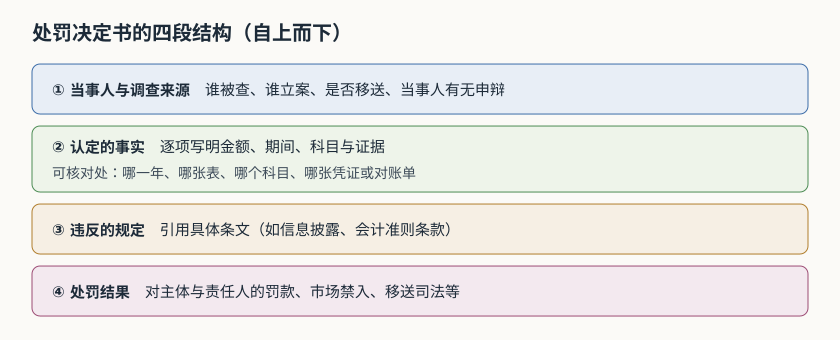
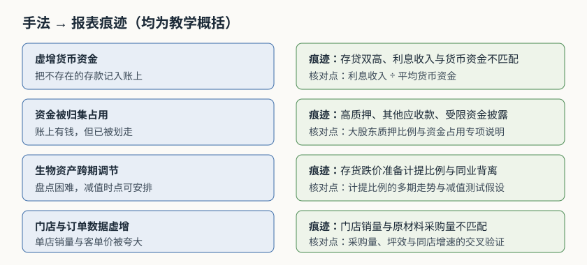

A股暴雷案例：如何读监管处罚决定书
暴雷故事人人会讲，能逐句核对的是文书。这一章先把处罚决定书拆成固定结构，再把它与报表痕迹一一对应，最后划清“事后认定”与“事前发现”的界限。
从故事到证据
聊暴雷案例时，最容易听到的是“某某公司虚增了几百亿”这类金额，但真正能拿来核对的是监管机构公布的处罚决定书：它写清机关、日期、认定的事实、违反的规则和处罚结果。本章讨论的四家公司都已有公开的处理结果，但具体金额、日期与文书编号必须以官方原文为准；本页只提炼方法与链条，不替代对原文的阅读。
把案例当故事听，你记住的是情节；把文书当证据读，你能复用的是结构——一段认定事实里，哪一年、哪张表、哪个科目、哪张凭证。结构对了，换成另一家公司也照样能读。
一个必须先讲的边界：处罚决定书是事后证据。看到它时暴雷已经发生。它的价值在于“把事后认定的事实翻译回事前可观察的报表痕迹”，而不是提供一条能提前锁定任何一家公司的公式。
处罚决定书怎么读
一份处罚决定书的写法相对固定。把它拆成四段，每一段都问一个具体问题，读起来就快得多。

| 段落 | 回答的问题 | 你要记下的具体信息 |
|---|---|---|
| 当事人与调查来源 | 谁被查、何时立案 | 主体名称、责任人员、立案与发布时间 |
| 认定的事实 | 到底改了什么、改了多少 | 年度、报表科目、金额方向（虚增／虚减）、证据类型 |
| 违反的规定 | 触碰了哪条规则 | 引用的具体条款及其版本 |
| 处罚结果 | 如何收场 | 对主体与个人的处罚、是否移送司法 |
一篇文书读完后，你应该能填出一张“年度—科目—金额方向—证据”的四列表。如果某一行填不出来，说明那段事实你还没读细；如果整张表都是“虚增利润”而没有科目，那读到的只是一句结论。
四案例的链条还原
下面四家公司在证监会或境外监管机构的公开处理中均有记载。表中“手法”与“痕迹”是对公开案情的教学概括，金额、日期与文书编号一律以监管机构公布的原文为准，本页不转述二手数字，也不对任何人做定性。

| 公司 | 被认定的手法（概括） | 事前的报表痕迹 | 处理方向 |
|---|---|---|---|
| 康美药业 | 虚增货币资金与营业收入，伪造银行回单等 | 存贷双高；利息收入与货币资金规模严重不匹配 | 公司退市；实际控制人等被追究刑事责任 |
| 康得新 | 资金通过现金管理安排被归集占用；虚构销售 | 存贷双高；大股东高比例质押；账上现金仍持续发债 | 公司退市；实际控制人等被追究责任 |
| 獐子岛 | 生物资产存货与采捕数据不实，跨期调节利润 | 存货跌价准备计提比例与同业背离、时点集中 | 公司受罚；相关人员承担法律责任 |
| 瑞幸咖啡 | 门店订单与客单价数据虚增收入 | 门店销量与原材料采购量、客单价宣传不一致 | 境外监管处罚并退市；境内亦有处理 |
四家的共同点不在于“都是坏人”，而在于都留下了一组可观察的痕迹：货币资金与利息收入不成比例、有钱却仍高息举债、跌价准备时点可疑、门店销量与供应链对不上。反过来说，每一条痕迹也都有正常解释——所以痕迹只把调查引向下一步，不直接给结论。
事后证据的能与不能
把处罚决定书当成学习材料，最大的价值是反向校准你的检查清单：监管最终认定的事实，往往就是当初最该去算的那个数字。但它也有明确的局限：
- 不能直接当预测器。一份已公布的处罚书不可能告诉你下一家是谁；把案例痕迹堆成一个“必爆名单”没有统计依据。
- 不能只记金额。金额是结果，可复用的是“期间—科目—方向—证据”的链条；没有链条的金额背下来也用不上。
- 不能忽略正常解释。存贷双高可能来自真实的资金储备计划，跌价集中可能来自行业周期；必须先把口径与业务原因排除掉。
- 不能拿二手概括作引证。引用时写明发布机关、日期与文书编号，并回到官方渠道核对。
单一痕迹不等于造假。任何一条痕迹在正常经营中都可能出现；只有当它与同一期间其他证据相互印证、且无法用口径或业务解释时，才升级为需要深挖的问题。
存贷双高工作台
“存贷双高”不能只凭感觉：把货币资金、有息负债与利息收入放回同一个口径，就能得到一个可比较的收益率。下列数值为教学示意，可手工复算：货币资金占总资产 300 ÷ 1000 = 30%；有息负债占总资产 400 ÷ 1000 = 40%；利息收益率 3 ÷ 300 = 1%。
修改数据，即时复算
利息收入与货币资金必须属于同一期间、同一口径；货币资金为零时收益率不适用。
清单与自测
把案例拆成一套可复用流程，建议固定这四步：
找到原始文书：机关、日期、文书编号、当事人，一项不落。
把认定的事实填成“年度—科目—金额方向—证据”表，而不是只记金额。
把每条事实反向翻译成一个事前能算的数字（如利息收益率、跌价准备比例）。
给每个数字写下至少一个正常解释，并去找能证实或排除它的公告与附注。
自测一：把四家公司都标上“存贷双高”，能得出“存贷双高就一定会暴雷”吗？
不能。存贷双高也可能是真实的资金规划或正在进行的重大投资的前置安排。案例只能证明“事后看，这个数字值得深挖”，不能证明它对所有公司都是充分信号。
自测二：为什么本页不给具体虚增金额？
因为金额必须来自监管机构公布的处罚决定书原文，转述二手数字存在漂移与失真风险。需要金额时，应直接引用原文并写明发布机关、日期与文书编号。
结论：案例学习的产出不是一张“必爆名单”，而是一张“事后认定的事实 → 事前可观察的报表痕迹 → 正常解释 → 待核实问题”的映射表。
依据与边界
本页所有公司描述均为对公开处理结果的教学概括，不构成投资建议，也不代表对任何主体的法律评价。注意：本章未给出具体虚增金额、日期与文书编号，因为这些必须回到处罚决定书原文核对；转述二手转载有失真风险。
本页的算例数字均为教学虚构，不指向任何真实公司。处罚决定书属于事后证据，其作用是反向校准事前检查清单，而不是提供预测公式。引用具体案例时，请直接引用监管机构公布的原文，并写明发布机关、日期与文书编号。